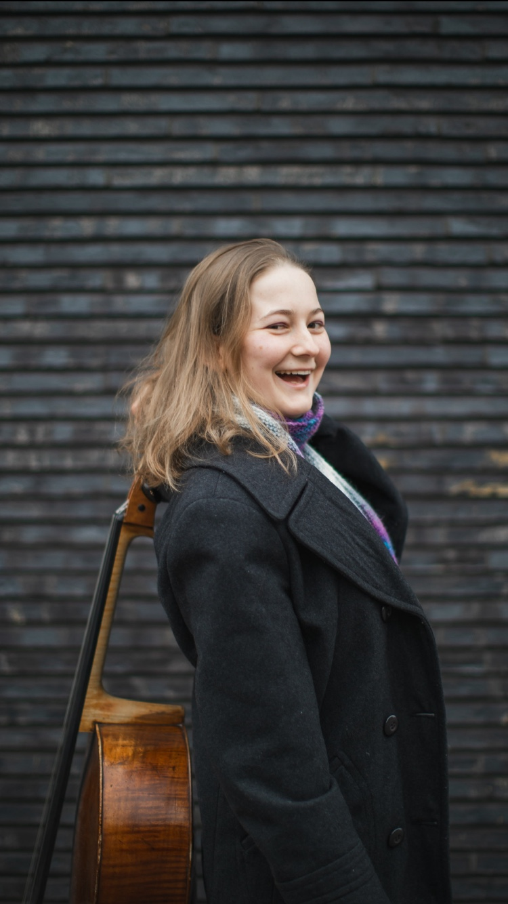

Built by a musician,
for musicians.
Practice Desk was created by cellist Anna Crawford to make thoughtful professional feedback easier to access — without requiring a live lesson or a shared diary slot.
Founder of Practice Desk

Anna Crawford is a British cellist and full-time member of the Royal Liverpool Philharmonic Orchestra. She graduated from the Royal College of Music in 2024, where she studied with Gemma Rosefield and was supported by a number of major awards and scholarships, including the Victor and Lilian Hochhauser Scholarship, the Countess of Munster Musical Trust Derek Butler Award, a Help Musicians Postgraduate Award and the Philharmonia Orchestra MMSF Instrumental Fellowship.
Alongside her position with the Royal Liverpool Philharmonic, Anna has performed with orchestras including the Philharmonia and Bournemouth Symphony Orchestra, as well as international ensembles including the European Union Youth Orchestra and LGT Young Soloists.
Anna has twice won the Royal College of Music Cello Competition and has received awards at international and national competitions including the Padova International Competition, Gustav Mahler International Cello Competition, Eastbourne Young Soloist Competition and D’Addario Competition. She was also a string finalist at the Tunbridge Wells International Music Competition.
As a soloist and chamber musician, she has performed across the UK and Europe, including Dvořák’s Cello Concerto with the City of Rochester Symphony Orchestra, alongside recitals and chamber projects at venues and festivals including The Foundling Museum, Fairfield Halls, Quatre-Cordes Festival, Maiastra Chamber Music and the Europa Cultural Heritage Summit.
Great feedback doesn’t always need a lesson slot.
I created Practice Desk because there are times when what a musician really needs is simply another pair of experienced ears.
Live lessons are invaluable, but they come with limitations: finding a time that works for both people, committing to a full lesson, and — online — trying to communicate detailed musical ideas through compressed audio and an unreliable connection.
With Practice Desk, you can record your playing properly, in your own time. I can listen carefully, replay passages and consider the performance away from the pressure of a live lesson, before giving you clear, detailed feedback and a plan for what to work on next.
It isn’t intended to replace great teaching. It’s another way of accessing expert ears when you need them.
My longer-term aim is to open Practice Desk to other professional performers and teachers too — giving learners access to musicians they might not otherwise be able to study with, while allowing busy musicians to teach and share their expertise without committing to a regular lesson diary.
Submit your playing